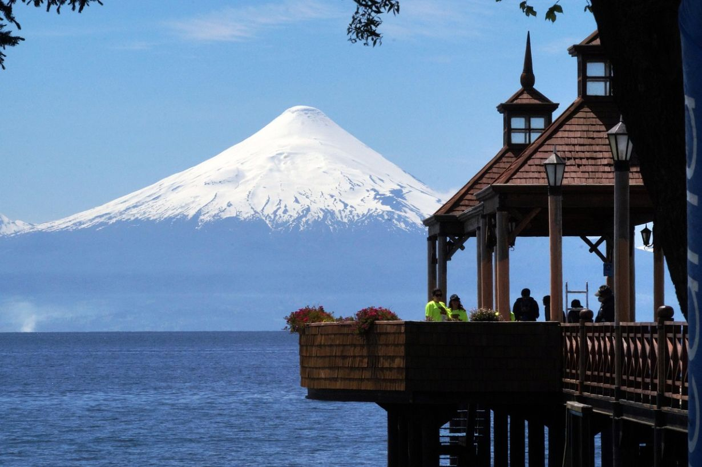

My favorite city is Osorno, because a serve a mission there.
Osorno is a city in south-central Chile, located on the Rahue River. The 18th-century Fort Reina Luisa stands beside the river. The Municipal Historical Museum features exhibits on Mapuche culture and the 19th-century German settlers who built the nearby mansions. Nearby are the Local Craft Center with its artisan stalls and the neo-Gothic Cathedral of San Mateo. To the east of Osorno lie the forests and volcanoes of Puyehue National Park.
